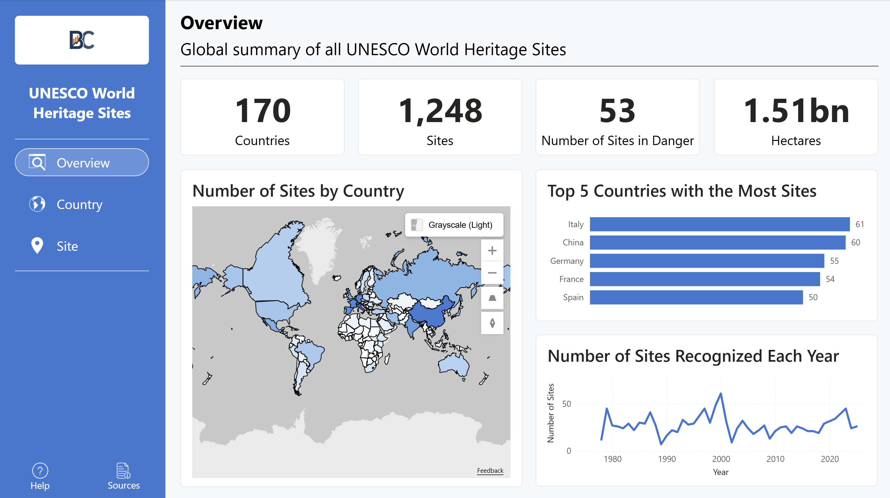

UNESCO World Heritage Sites (Power BI)

Interactive Power BI dashboard analyzing UNESCO World Heritage Sites globally, with country-level and site-level insights, key metrics, and user-friendly functionality.
Tools & Skills: Power BI · DAX · Data modeling · Mapping